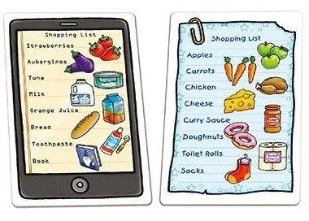
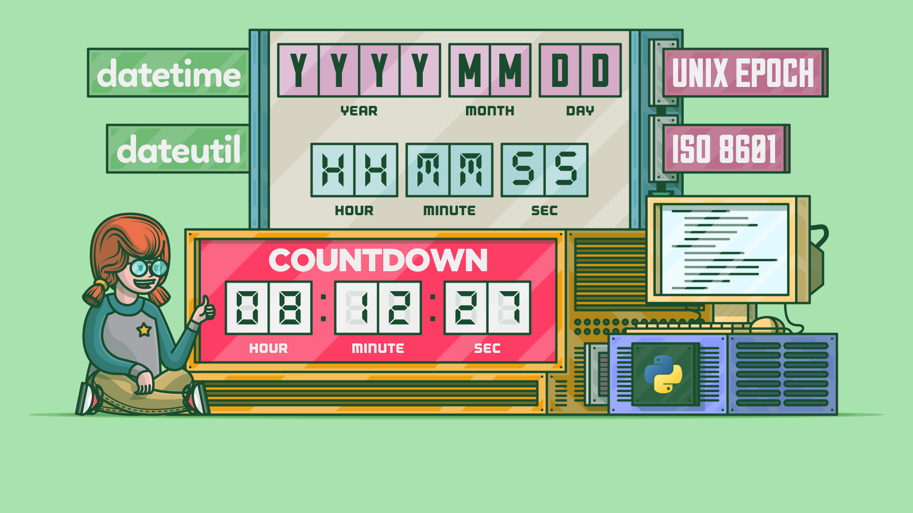
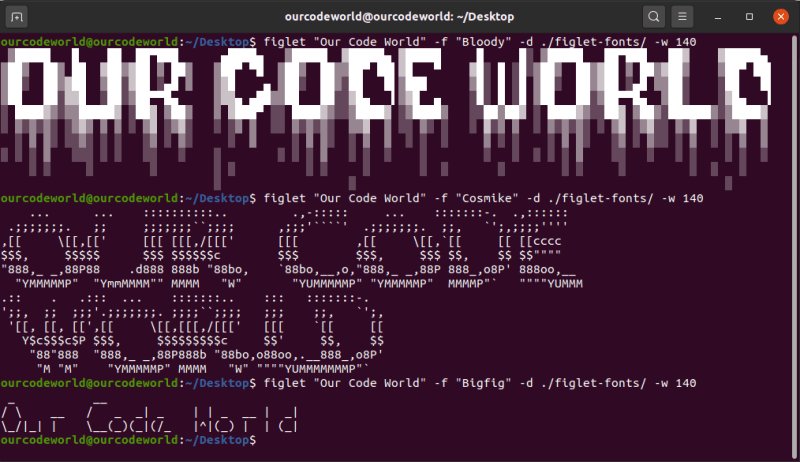
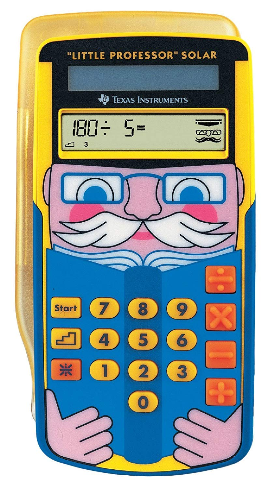

Завдання №4
Прикладна аналітика
Винятки
1. Рівень палива

Паливні датчики показують, часто з частками, скільки пального є в баку. Наприклад, 1/4 означає, що бак заповнений на 25%, 1/2 - на 50%, а 3/4 - на 75%.
Завдання: у файлі з назвою fuel.py реалізуйте програму, яка запитує користувача введення дробу у форматі X/Y, де кожне з X та Y є цілим числом, а потім виводить у відсотках, округлених до найближчого цілого, кількість пального у баку. Якщо залишилось 1% або менше, виведіть E, щоб вказати, що бак практично порожній. А якщо залишилось 99% або більше, виведіть F, щоб вказати, що бак фактично повний.
Якщо ж X або Y не є цілими числами, X більше за Y або Y дорівнює 0, натомість знову запитайте користувача. (Не обов’язково, щоб Y дорівнювало 4.) Обов’язково перехопіть усі винятки, такі як ValueError або ZeroDivisionError.
Пам’ятайте, що
strмає досить багато методів, згідно з https://docs.python.org/3/library/stdtypes.html#string-methods, включаючиsplit.Зверніть увагу, що ви можете обробляти два виключення окремо за допомогою коду на кшталт:
try: ... except ValueError: ... except ZeroDivisionError: ...Або ви можете обробляти два винятки разом за допомогою коду типу:
try: ... except (ValueError, ZeroDivisionError): ...
Приклад виконання програми

2. McDonald’s

Одне з найпопулярніших місць швидкого харчування - McDonald’s, який пропонує меню страв, згідно з наведеним нижче словником, де вартість кожного ключа - це ціна в гривнях:
{
"Hamburger": 52,
"Cheeseburger": 50,
"Double Cheeseburger": 94,
"McChicken": 97,
"McChicken Curry": 119,
"McChicken Bacon": 128,
"Big Mac": 110,
"Big Tasty": 184,
"Filet-O-Fish": 94,
"Royal Cheeseburger": 125,
"Double Royal Cheeseburger": 189,
}Завдання: у файлі з ім’ям mcdonalds.py реалізуйте програму, яка дозволяє користувачеві зробити замовлення, підказуючи йому позиції, по одній у рядку, поки користувач не введе control-d (це звичайний спосіб завершення введення даних у програмі). Після кожного введеного товару виведіть на екран загальну вартість усіх товарів, введених до цього часу, з префіксом гривні (₴) і відформатовану з двома десятковими знаками. Не зважайте на регістр вводу користувача. Ігноруйте будь-який ввід, якого не має в меню. Припустимо, що кожен пункт у меню буде починатися з заглавної літери.
Зауважте, що ви можете виявити, коли користувач ввів control-d, перехопивши
EOFErrorз кодом типу:try: item = input() except EOFError: ...Можливо, ви захочете надрукувати новий рядок, щоб курсор користувача (і подальші підказки) не залишався на тому самому рядку, що й підказки вашої програми.
Введення control-d не потребує натискання клавіші Enter, тому курсор користувача (і подальші підказки) можуть залишатися на тому самому рядку, що й підказки вашої програми. Ви можете перемістити курсор користувача на новий рядок, надрукувавши
\nсамостійно!Зауважте, що
dictмає досить багато методів, зокремаget, і підтримує такі операції, як:d[key]та
if key in d: ...де
d-dict, аkey-str.Переконайтеся, що ви уникнули або зловили будь-яку
KeyError.
3. Список продуктів

Припустимо, що ви маєте звичку складати список необхідних товарів у продуктовому магазині.
У файлі з назвою grocery.py напишіть програму, яка виводитиме користувачу список продуктів по одному у рядку, доки користувач не введе control-d (це звичайний спосіб завершення вводу у програмі). Потім виведіть список продуктів у великими літерами, відсортований в алфавітному порядку за позиціями, додаючи до кожного рядка префікс, який відповідає кількості разів, коли користувач вводив цю позицію. Не враховуйте регістр вводу користувача.
Зауважте, що ви можете виявити, коли користувач ввів control-d, перехопивши
EOFErrorз кодом типу:try: item = input() except EOFError: ...Можливо, ви захочете надрукувати новий рядок, щоб курсор користувача (і подальші підказки) не залишався на тому самому рядку, що й підказки вашої програми.
Введення control-d не потребує натискання клавіші Enter, тому курсор користувача (і подальші підказки) можуть залишатися на тому самому рядку, що й підказки вашої програми. Ви можете перемістити курсор користувача на новий рядок, надрукувавши
\nсамостійно!Зауважте, що
dictмає досить багато методів, зокремаget, і підтримує такі операції, як:d[key]та
if key in d: ...де
d-dict, аkey-str.Переконайтеся, що ви уникнули або зловили будь-яку
KeyError.
Приклад виконання програми

4. Фантастичні дати і методи їх обробки

У Сполучених Штатах дати зазвичай форматуються в порядку місяць-день-рік (МMM/DD/YYYY), інакше відомому як middle-endian, що, можливо, є поганим дизайном. Дати в такому форматі нелегко сортувати, оскільки рік стоїть на останньому місці, а не на першому. Спробуйте відсортувати, наприклад, 2/2/1800, 3/3/1900 і 1/1/2000 в хронологічному порядку в будь-якій програмі (наприклад, в електронній таблиці). Дати в цьому форматі також неоднозначні. Історія КНУ імені Тараса Шевченка бере свій початок з 8 листопада 1833 року, але 11/8/1833 також можна інтерпретувати як 11 серпня 1833 року!
На щастя, комп’ютери, як правило, використовують ISO 8601, міжнародний стандарт, який передбачає, що дати слід форматувати в порядку рік-місяць-день (YYYY-MM-DD), незалежно від країни, форматуючи роки чотирма цифрами, місяці двома цифрами і дні двома цифрами, “доповнюючи” кожну з них за необхідності початковими нулями.
У файлі з назвою outdated.py реалізуйте програму, яка запитує у користувача дату anno Domini у форматі місяць-день-рік, наприклад, 9/8/1636 або 8 вересня 1636 року, причому місяць в останньому випадку може бути будь-яким зі значень у наведеному нижче list:
[
"січня",
"лютого",
"березня",
"квітня",
"травня",
"червня",
"липня",
"серпня",
"вересня",
"жовтня",
"листопада",
"грудня",
]Потім виведіть ту саму дату у форматі YYYY-MM-DD. Якщо користувач вводить невірну дату у жодному з форматів, запитайте його ще раз. Вважайте, що кожен місяць має не більше 31 дня; не потрібно перевіряти, чи має місяць 28, 29, 30 або 31 день.
Нагадаємо, що
strмає досить багато методів, включаючиsplit.Нагадаємо, що
listмає досить багато методів, серед яких єindex.Зауважте, що ви можете відформатувати
intз початковими нулями за допомогою коду на кшталт:print(f"{n:02}")де, якщо
nє однозначним числом, до нього буде додано один0, згідно з https://docs.python.org/3/library/string.html#format-string-syntax.
Бібліотеки
1. Емодзі
Оскільки емодзі не так легко набирати, як текст, принаймні на ноутбуках і настільних комп’ютерах, деякі програми підтримують “коди”, за допомогою яких ви можете ввести, наприклад, :thumbs_up:, який буде автоматично перетворено на 👍. Деякі програми додатково підтримують псевдоніми, за допомогою яких ви можете більш лаконічно ввести, наприклад, :thumbsup:, який також буде автоматично перетворено на 👍.
Список кодів з псевдонімами дивіться на https://carpedm20.github.io/emoji/all.html?enableList=enable_list_alias.
Завдання: у файлі під назвою emojize.py реалізуйте програму, яка запитує у користувача рядок англійською мовою, а потім виводить “емодзізовану” версію цього рядка, перетворюючи будь-які коди (або псевдоніми) у відповідні емодзі.
- Зауважте, що модуль емодзі постачається з двома функціями на https://pypi.org/project/emoji, одна з яких -
emojize, яка приймає необов’язковий іменований параметр, що називаєтьсяlanguage. Ви можете встановити його за допомогою:
terminal
pip install emoji2. FIGlet

FIGlet — це програма початку 1990-х років для створення великих літер із звичайного тексту у форматі мистецтва ASCII:
______ _____ _______
| ____|_ _|__ __|
| |__ | | | |
| __| | | | |
| | _| |_ | |
|_| |_____| |_|
Шрифти, які підтримує FIGlet знаходяться за посиланням http://www.figlet.org/examples.html.
FIGlet було перенесено на Python у вигляді модуля під назвою pyfiglet.
Завдання: у файлі з назвою figlet.py реалізуйте програму, яка:
- Очікує нуль або два аргументи командного рядка:
- Нуль, якщо користувач бажає вивести текст випадковим шрифтом.
- Два, якщо користувач бажає вивести текст певним шрифтом, у цьому випадку першим з двох аргументів має бути
-fабо--font, а другим - назва шрифту.
- Запропонує користувачеві ввести рядок тексту.
- Виводить цей текст потрібним шрифтом.
Якщо користувач надає два аргументи командного рядка і перший з них не є -f або --font, або другий не є назвою шрифту, програма має завершити роботу за допомогою sys.exit з повідомленням про помилку.
- Встановити
pyfigletможна за допомогою:
terminal
pip install pyfigletДокументація по
pyfigletне дуже зрозуміла, але ви можете використовувати модуль наступним чином:from pyfiglet import Figlet figlet = Figlet()Після цього ви можете отримати
listдоступних шрифтів за допомогою такого коду:figlet.getFonts()Встановити шрифт можна за допомогою такого коду, де
f- ім’я шрифту у вигляді рядка:figlet.setFont(font=f)А вивести текст цим шрифтом можна за допомогою такого коду, де
s- це текст у виглядіstr:print(figlet.renderText(s))Зауважте, що модуль
randomмає досить багато функцій.
3. Adieu, Adieu
У фільмі “Звуки музики” є пісня англійською мовою “So Long, Farewell” з такими словами, де “adieu” французькою означає “прощавай”:
Adieu, adieu, to yieu and yieu and yieu
Звичайно, цей рядок не є граматично правильним, оскільки зазвичай його пишуть як:
Adieu, adieu, to yieu, yieu, and yieu
Чесно кажучи, “yieu” - це навіть не слово, воно просто римується з “you”!
Завдання: у файлі adieu.py реалізуйте програму, яка буде запитувати у користувача імена, по одному у рядку, доки користувач не введе control-d. Вважайте, що користувач введе хоча б одне ім’я. Потім попрощайтеся з цими іменами, відокремлюючи два імені одним and, три імені двома комами та одним and, і \(n\) імен з \(n-1\) комами та одним and, як показано нижче:
Adieu, adieu, to Liesl
Adieu, adieu, to Liesl and Friedrich
Adieu, adieu, to Liesl, Friedrich, and Louisa
Adieu, adieu, to Liesl, Friedrich, Louisa, and Kurt
Adieu, adieu, to Liesl, Friedrich, Louisa, Kurt, and Brigitta
Adieu, adieu, to Liesl, Friedrich, Louisa, Kurt, Brigitta, and Marta
Adieu, adieu, to Liesl, Friedrich, Louisa, Kurt, Brigitta, Marta, and Gretl
- Модуль
inflectпостачається з великою кількістю методів. Ви можете встановити його за допомогою:
terminal
pip install inflect4. Вгадайка
Я загадав число від 1 до 100…
Яке воно?
У файлі game.py реалізуйте програму, яка:
- Запитує у користувача \(n\). Якщо користувач не вводить натуральне число, програма повинна перепитати його знову.
- Випадковим чином генерує ціле число від 1 до \(n\) включно, використовуючи модуль
random. - Запитує користувача вгадати це число. Якщо вгадане число не є додатнім, програма повинна запитати користувача ще раз.
- Якщо вгадане число менше, ніж задане, програма виводить повідомлення
Too small!і повторно запитує користувача. - Якщо відповідь більша за вказане число, програма повинна вивести повідомлення
Too large!і запитати користувача ще раз. - Якщо відповідь збігається з заданим числом, програма повинна вивести
Just right!і завершити роботу.
- Якщо вгадане число менше, ніж задане, програма виводить повідомлення
- Модуль
randomмає досить багато функцій.
5. Маленький Професор

Маленький Професор — “калькулятор”, який генерує десять різних математичних задач, які потрібно розв’язати. Наприклад, якщо іграшка показує 4 + 0 =, необхідно вказати 4. Якщо іграшка показувала 4 + 1 =, правильна відповідь 5. Якщо відповідь невірна, іграшка показує EEE. Після трьох неправильних відповідей на одну і ту ж задачу іграшка показує правильну відповідь (наприклад, 4 + 0 = 4 або 4 + 1 = 5).
Завдання: у файлі professor.py реалізуйте програму, яка
- Запитує у користувача
level\(n\). Якщо користувач не вводить1,2або3, програма повинна перепитати його знову. - Випадковим чином генерує десять (10) математичних задач у форматі
X + Y =, де кожне зXтаYє цілим невід’ємним числом з \(n\) цифр. Підтримує тільки операції додавання (+). - Пропонує користувачеві розв’язати кожну з цих задач. Якщо відповідь неправильна (або навіть не є числом), програма повинна вивести
EEEі знову запитує у користувача відповідь, дозволяючи зробити до трьох спроб для цієї задачі. Якщо після трьох спроб користувач все ще не відповів правильно, програма повинна вивести правильну відповідь. - Програма повинна вивести результат користувача: кількість правильних відповідей з 10.
Структуруйте вашу програму наступним чином, де get_level запитує (і, якщо потрібно, повторно запитує) користувача про \(n\) і повертає 1, 2 або 3, а generate_integer повертає випадково згенероване невід’ємне ціле число з цифрами level або генерує ValueError, якщо level не дорівнює 1, 2 або 3:
import random
def main():
...
def get_level():
...
def generate_integer(level):
...
if __name__ == "__main__":
main()Ви можете згенерувати виключення типу
ValueErrorза допомогою коду:raise ValueErrorМодуль
randomмає досить багато функцій.
6. Індекс цін на біткойн
Біткойн - це форма цифрової валюти, також відома як криптовалюта. Замість того, щоб покладатися на центральний орган, такий як банк, біткойн покладається на розподілену мережу, інакше відому як блокчейн, для запису транзакцій.
Оскільки існує попит на біткойн (тобто користувачі хочуть його мати), вони готові купувати його, наприклад, обмінюючи одну валюту (наприклад, долар США) на біткойн.
Завдання: у файлі bitcoin.py реалізуйте програму, яка:
- Очікує, що користувач вкаже в якості аргументу командного рядка кількість біткоїнів \(n\), яку він бажає придбати. Якщо цей аргумент не може бути перетворений у
float, програма повинна завершити роботу черезsys.exit з повідомленням про помилку. - Запитує API для індексу цін на біткоїн CoinDesk за адресою https://api.coindesk.com/v1/bpi/currentprice.json, який повертає JSON-об’єкт, серед вкладених ключів якого є поточна ціна біткоїна у вигляді
float. Переконайтеся, що ви перехоплюєте всі винятки, як у випадку з кодом типу:
import requests
try:
...
except requests.RequestException:
...- Виводить поточну вартість \(n\) біткоїнів у доларах США з точністю до чотирьох знаків після коми, використовуючи
,як роздільник тисяч.
- Нагадаємо, що модуль
sysмає аргументargv. - Модуль
requestsмістить багато методів, серед якихgetтаjson. Ви можете встановити його за допомогою:
terminal
pip install requests- API CoinDesk повертає відповідь у вигляді JSON:
{
"time":{
"updated":"May 2, 2022 15:27:00 UTC",
"updatedISO":"2022-05-02T15:27:00+00:00",
"updateduk":"May 2, 2022 at 16:27 BST"
},
"disclaimer":"This data was produced from the CoinDesk Bitcoin Price Index (USD). Non-USD currency data converted using hourly conversion rate from openexchangerates.org",
"chartName":"Bitcoin",
"bpi":{
"USD":{
"code":"USD",
"symbol":"$",
"rate":"38,761.0833",
"description":"United States Dollar",
"rate_float":38761.0833
},
"GBP":{
"code":"GBP",
"symbol":"£",
"rate":"30,827.6198",
"description":"British Pound Sterling",
"rate_float":30827.6198
},
"EUR":{
"code":"EUR",
"symbol":"€",
"rate":"36,800.2764",
"description":"Euro",
"rate_float":36800.2764
}
}
}Ви можете відформатувати USD до чотирьох знаків після коми з роздільником тисяч за допомогою коду:
print(f"{amount:,.4f}")